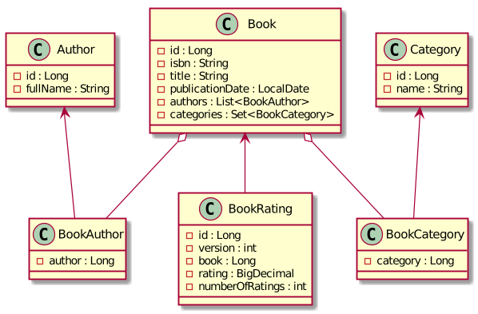
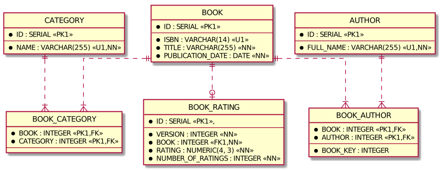

Spring Data JDBC Examples
The example evaluates Spring Data JDBC as an alternative to Spring Data JPA. The following topics are covered:
- one-to-one, one-to-many, many-to-many relationships
- optimistic locking
- entity to DTO mapping
Prerequisites
- JDK 11
- Docker at least 1.6.0
How to run tests
To build project and run all tests use command
./gradlew cleanTest test -i
Implementation details
- JDK 11
- Spring Boot 2.2.x
- Spring Data Release Train Neumann-RC1
- Spring Data JDBC 2.0.0.RC1
- MapStruct 1.3.1.Final
- JUnit 5
- Testcontainers
This example has a simple domain model. A book has at least one author and belongs to at least one category. A book can be rated. An average rating and a total number of ratings are tracked.
Spring Data JDBC is inspired by Aggregate Roots and Repositories as described in the book Domain Driven Design by Eric Evans. Aggregate Root is an entity that controls the lifecycle of related entities forming together an Aggregate. Each Aggregate has only one Aggregate Root. You should have a Repository per Aggregate Root. Related entities doesn't exist alone without an Aggregate Root. When an Aggregate Root is deleted, all related entities get deleted too.
If two entities have different life-cycles these are separate Aggregate Roots. Thus, in contrast to JPA, one-to-many and many-to-many relationships must be modeled by referencing the ID and join tables for many-to-many relationships must be mapped to a Java class and added to an Aggregate.
In the example there are 3 Aggregates:
Book(Aggregate Root),BookAuthor,BookCategoryAuthor(Aggregate Root)Category(Aggregate Root)
UML class diagram

Entity-relationship diagram

Test cases
- Queries -
com.example.spring.data.jdbc.BookRepositoryTest CrudRepository.save- during saving all entities referenced from an aggregate root are deleted and recreatedCrudRepository.findByIdPagingAndSortingRepository.findAll(Pageable)@Querywith SQL@Querywith SQL join@Querywith SQL and pagination- Mapping from entity to DTO using MapStruct
- Reactive
Mono.fromCallablewrapping synchronous call - Locking strategies -
com.example.spring.data.jdbc.BookRatingRepositoryTest - Implicit optimistic lock of entity with
@Versionon modification